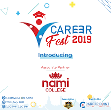
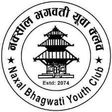

Worked as a tutor in Lord Buddha Institute of Technology(Jan 2020-April 2020)
I worked as a tutor in the institute for preparation of College Entrance Examination for three months after completing high school. I read in the same institute before and worked as a tutor for Mathematics and Physics. I used to answer all the questions students had in their coursework. I used to prepare questions and take weekly mock exam of students as well. I learnt leadership skill after working as a tutor. My skill of handling difficult situations was developed as well.

Organizer of Career Fest 2019(May 2019-June 2019)
I worked as a organizer of Career Fest 2019 - a one day event organized by Career Point Education Service Center.
The objective was to provide career counseling and explain about different job oppurtunities to the interested students. More than 200 students visited and the event was successful. We heard from different successful people in the event as well.
Personally, I worked as the lead of 'Hunting Sponsor Group' in the same event. I along with my teammates did a very good job of collecting sponsorship for the project. I learnt team collaboration and I think I enhanced my leadership skill after being part of this event.

Member of Nepal Scout(Aug 2015-May 2019)
I was member of Nepal Scout when I was studying in Chamdikaswori English Secondary School. I participated in Training Camps in Kakani International Scout Center and in Sundarijal National Training Center as well. I participated in Trishuli White Water Rafting-2073 and other different adventurous activities like Rock climbing.
I participated in Inter-Patrol Cooking Competition on the occasion of Second Manmohan Scout Troop Day. I participated in Teej Service Camp 2016. I participated in Bagmati Cleaning Campaign multiple times as a member of the responsible community. There used to be different fun activities organized in my school and I used to take part in all of them because I used to enjoy them. I learnt a lot of important skills that are helpful in my day to day life as well.

Member of Bhagwati Youth Club(local club)(Jan 2017-May 2020)
I worked as a member of Bhagwati Youth Club when I was in Nepal. We organized blood donation programs in different places of our community. Aside from that, we organized different rallies in the weekends. I participated in rally against rape organized by the same club. I also involved myself in different club meetings,and making discussions. We conducted Deusi-Bhailo porgram in Hindu festivals- Tihar which is famous in the world as 'Deepawali'. In the end of the years, we used to organize sports week and held different competitions. For organizing the event, we used to raise funds and seek for sponsors as well. I worked as the member of the club for almost 3 years.

Participated in Different Events in High School(May 2017- Aug 2019)
I was executive member of Physics Club in High School and our team conducted events like Physics Olympiad and Physics Hunt.
I volunteered in cleanliness campaign organized by Eco club. I also participated in different events organized by different clubs. I took part in SET exhibition organized by SET club. I took part in the event 'Cycle Rally against Cancer' organized by Sports Club. I participated in Math Mela, Physics olympiad, Story writing Competition, Debate Competition and Essay Writing Competition in high school. I was a team member of Football in high school as well. I participated in Mini-marathon and played in intra-school football tournament.
Intern of Battle of Titans(September 2019-October 2019)
The event 'Battle of Titans' was organized by Alfa Entertainment and Events. I was the member of the organization team. We used to take part in different weekly meetings about the event. The event was the battle of different robots. I was the member of event management group and my work was to manage the event. I took care of the spot for the event and organized all the important works in the event day. I learnt about team work and collaboration from the event.